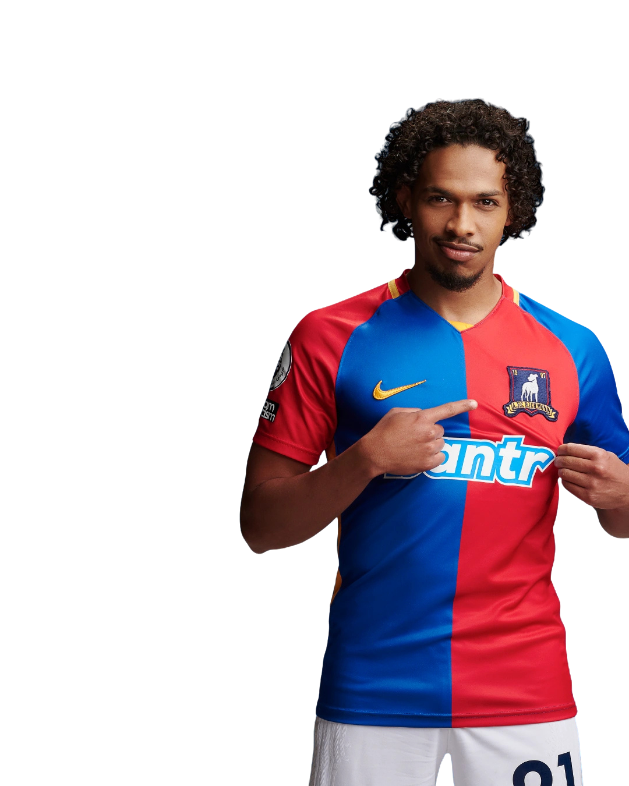

21
← Back to squad
MoeBumbercatch
- Position
- Centre Midfielder
- Squad number
- 21
- Nationality
- Swiss
- Height
- 5'5"
Moe Bumbercatch is an energetic central midfielder who plays an important supporting role in AFC Richmond's midfield. Wearing the number 21 shirt, he contributes with movement, work rate and technical ability in possession.
Despite being one of the smaller players in the squad, Bumbercatch plays with intensity and determination. His energy allows him to contribute in both attacking and defensive situations, helping Richmond maintain balance through the centre of the pitch.
Away from football, Moe is known among his teammates for his distinctive personality and his interest in knitting, which he describes as a relaxing hobby.